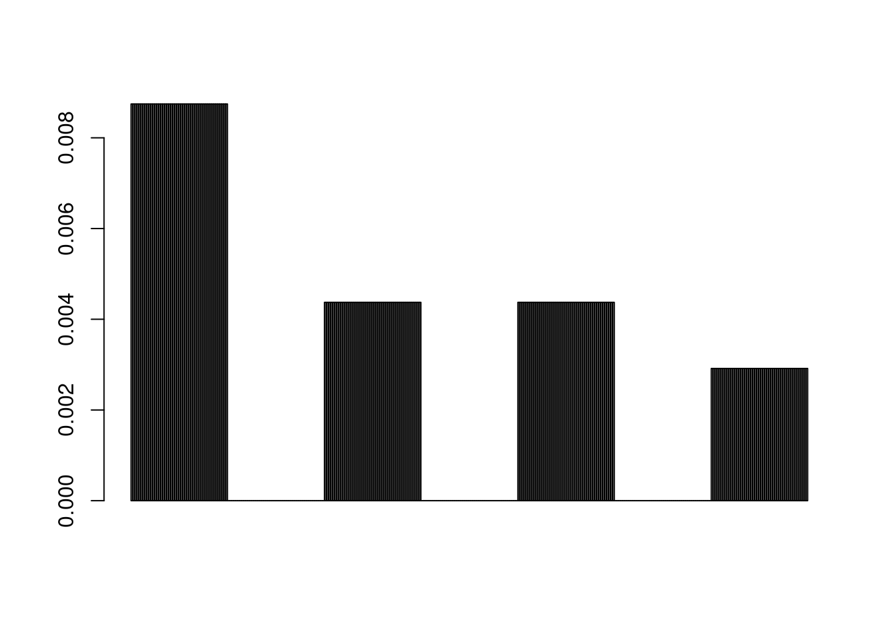
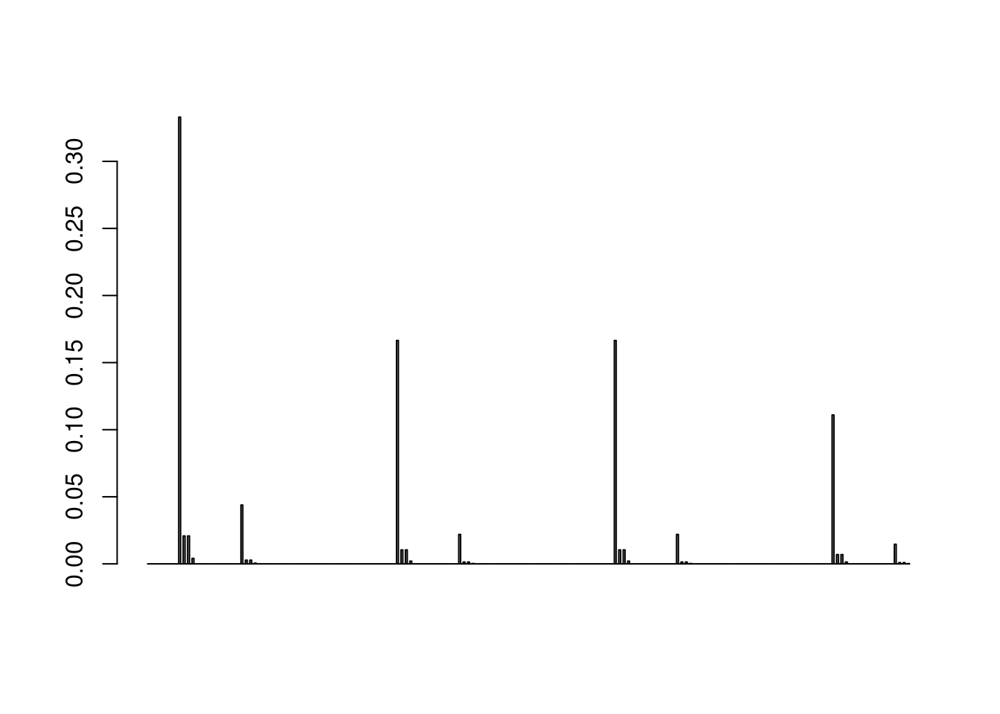
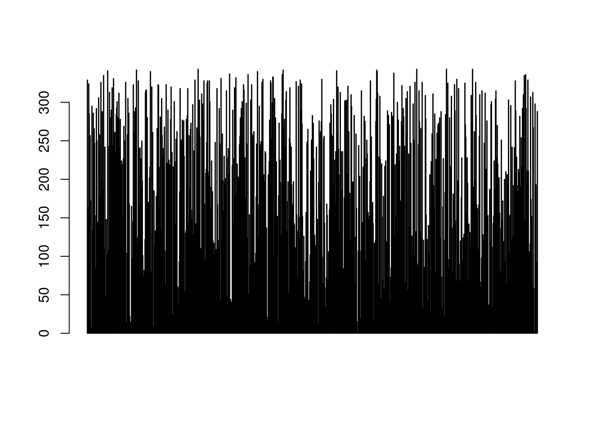

3 Cultural Evolution
Reading: Kirby, Simon, Mike Dowman, and Thomas L Griffiths. “Innateness and Culture in the Evolution of Language.” PNAS 104, no. 12 (2007): 5241–45. https://doi.org/10/c78969.
This lab will be about implementing a simple model of cultural evolution of language.
3.1 The languages
The first thing we need to do is create the set of all languages we are going to consider. Each language will be modelled as a set of signals, where each signal refers to some (and possibly all) or none of the objects. For instance, one signal might refer to two of three objects, another to none of the objects, and yet another to all of the objects. We do not want to consider all possible languages, because we want the agent to always have at least one signal to send for each possible object. Therefore, we will exclude those languages such that there is no signal for one or more of the objects.
We can represent a language as a 3 by 3 matrix. Each row represents one signal and each column is one object, so there are three signals and three objects. This is an example of a language:
## [,1] [,2] [,3]
## [1,] 0 1 1
## [2,] 1 0 1
## [3,] 1 0 0Note that a language is in a sense simply a list of 9 numbers (0s and 1s) organized in a grid. So the simplest way to create the set of all languages is to generate the set of all possible lists of nine 0s and 1s, and then organize each of them in a grid. Let’s start by creating all combinations:
## Var1 Var2 Var3 Var4 Var5 Var6 Var7 Var8 Var9
## [1,] 0 0 0 0 0 0 0 0 0
## [2,] 1 0 0 0 0 0 0 0 0
## [3,] 0 1 0 0 0 0 0 0 0
## [4,] 1 1 0 0 0 0 0 0 0
## [5,] 0 0 1 0 0 0 0 0 0
## [6,] 1 0 1 0 0 0 0 0 0Now we can restructure each of those lists into a 3 by 3 matrix. What we get is a three-dimensional array: the first index represents the language, the second index the signal, and the third index the object. So if you take a specific language from the list (e.g. languages.all.combinations[9,,]) you get a 3 by 3 matrix.
# reshape all combinations of 9 0s and 1s into 3 by 3 grids
# new array has shape (language, word, meaning)
languages.all.combinations <- array(flat.languages, dim=c(512,3,3))
# print an example of a language
languages.all.combinations[2,,]## [,1] [,2] [,3]
## [1,] 1 0 0
## [2,] 0 0 0
## [3,] 0 0 0Let’s do a sanity check! Since we are considering all possible languages, across all languages there should be no difference between any combination of word and object.
## [,1] [,2] [,3]
## [1,] 256 256 256
## [2,] 256 256 256
## [3,] 256 256 256Now let’s find those languages where there are states for which there is no word. We are not going to consider those languages!
number.signals.per.object <- colSums(aperm(languages.all.combinations, c(2,1,3)))
indices.to.include <- apply(number.signals.per.object != 0,1, all)
# create a new language array with only those languages that have
# at least one word for each state
languages <- languages.all.combinations[indices.to.include,,]
# let's also keep track of the number of signals per object
# of just the languages we consider
# (it'll be useful later)
number.signals.per.object.languages <- number.signals.per.object[indices.to.include,]Another sanity check: go through a few languages and make sure that they indeed have at least one word for each object. There are 343 of them!
## [,1] [,2] [,3]
## [1,] 1 1 1
## [2,] 0 0 0
## [3,] 0 0 0We are left with 343 languages that satisfy our condition (namely, that there is at least one word for each object, so that whatever the agents observe they’ll have something to say). Next, we can write a function that given a language, produces an object (given by the world) and selects a signal at random in the language among the ones that refer to the object.
pick.object <- function(language){
object <- sample(x=1:3, size=1)
# get the *indices* of the signals that apply to the object in the language
indices.signals <- which(language[,object]==1)
# pick one of the indices
signal <- sample(indices.signals, size=1)
return(c(object, signal))
}Another sanity check! Run this a bunch of times with different languages and make sure you understand what is going on.
## [,1] [,2] [,3]
## [1,] 1 0 1
## [2,] 1 1 0
## [3,] 0 0 0## [1] 3 13.2 Bayesian learning of the language from data
Now we have a function to produce a single combination of object and signal given a language. Let’s write a function that does Bayesian updating: going from the list of all languages, a prior, and some data to a posterior over languages.
bayesian.update <- function(object, signal, prior, languages){
# the likelihood (probability of that combination of object and signal given a language)
# for a given language is equal to 0 if the signal is not compatible with the object
# in the language, and otherwise 1/(number of signals compatible with the object in the language)
# the number of signals compatible with the object in each language
# is in the number.signals.per.object which we used before!
test <- languages[,signal,object]==0
no <- 1/number.signals.per.object.languages[,object]
yes <- 0
likelihood <- ifelse(
test,
yes,
no
)
# calculate a normalized posterior
unnormalized.posterior <- likelihood * prior
posterior <- unnormalized.posterior / sum(unnormalized.posterior)
return(posterior)
}We have written the function to do the Bayesian updating, let’s test it on real data:
## [1] "language:"## [,1] [,2] [,3]
## [1,] 1 0 1
## [2,] 1 1 0
## [3,] 0 0 0# define a uniform prior
# that we will use again later on multiple times
uniform.prior <- rep(1,nrow(languages)) / nrow(languages)
language.index <- 20
language.sample <- pick.object(languages[language.index,,])
object <- language.sample[1]
signal <- language.sample[2]
posterior <- bayesian.update(object, signal, uniform.prior, languages)
barplot(posterior)
Now we’d like to have the agent learn on more than one observation! We could do it in clever complicated ways, but let’s keep it simple. We can just use a loop where we keep producing data from the language, and then updating our beliefs after each observation.
run.multiple.observations <- function(n.observations, language, prior){
# Okay, we could have directly have 'current.beliefs' as the parameter
# but I am adding this line for you for clarity
posterior <- prior
# loop over the observations
for (i in 1:n.observations){
prior <- posterior
# produce one datapoint (i.e. one combination of object and signal)
new.data <- pick.object(language)
object <- new.data[1]
signal <- new.data[2]
# do bayesian update on the new data
# and set 'current beliefs' to the new posterior
# NOTE: we are using the previous beliefs as the prior here
posterior <- bayesian.update(object, signal, prior, languages)
}
return(posterior)
}
# update belief with 10 observations
current.beliefs <- run.multiple.observations(10, languages[10,,], uniform.prior)
barplot(current.beliefs)
3.3 Cultural evolution with Bayesian agents!
Finally, we have all the ingredients necessary to run an iterated learning experiment.
iterate <- function(n.iterations, n.observations, prior){
# start with an agent with a random language
current.language.index <- sample(1:nrow(languages),size=1)
history <- c(current.language.index)
for (i in 1:n.iterations){
# first calculate the learner's posterior given the data produced by the
# previous generation's teacher
posterior <- run.multiple.observations(
n.observations,
languages[current.language.index,,],
prior
)
# then select a language given a posterior
# either by picking the language with the greatest probability
# or sampling from the posterior
# here we sample
current.language.index <- sample(nrow(languages), size=1, prob=posterior)
history <- c(history, current.language.index)
}
return(history)
}
n.iterations <- 1000
n.observations <- 1
history <- iterate(n.iterations, n.observations, uniform.prior)
head(history)## [1] 279 23 198 170 98 155If you run for 10k generations, you will see that it starts being pretty uniform over the set of languages! How can you interpret that?

3.4 If there is time left…
- Instead of having a single agent in each generation, implement multiple agents. The cultural child for each cultural parent is picked at random from the whole population, so that one cultural parent can have multiple cultural children (otherwise the model would be equivalent to multiple independent IL chains).
- Add a selection by communicative pressure: decide whether an agent gets to be part of the following generation depending on how successfully it can comunicate with its own cultural parent.
3.5 Exercises
- Exercise 1: What is the language that will lead to the worst communication and why? What are the language(s) that will lead to the best communication and why?
- Exercise 2: Run the iterated learning model for 10000 generations, but setting the
n.observationsparameter to 1 and then to 50 (this will take a while to run!). What changes in the results? Can you explain this difference? - Exercise 3: The model above has sample agents, which sample the language from their posterior. How would you implement maximum-a-posteriori agents, which always select the language with the highest posterior probability?
In the model above, we have used a uniform prior over the languages. But assume that for some reason you think that signal 1 fits particularly well with object 1. So a language where signal 1 refers to object 1 is going to have a higher prior probability than it would otherwise.
- Exercise 4: Write the code to produce a prior that is consistent with the description above. There are various ways of doing it, but basically any language where signal 1 refers to object 1 should have a higher prior probability than any language where signal 1 does not refer to object 1.
- Exercise 5: Run the iterated learning with this prior and plot the distribution over language over 10k generations. What do you notice compared to a uniform prior?